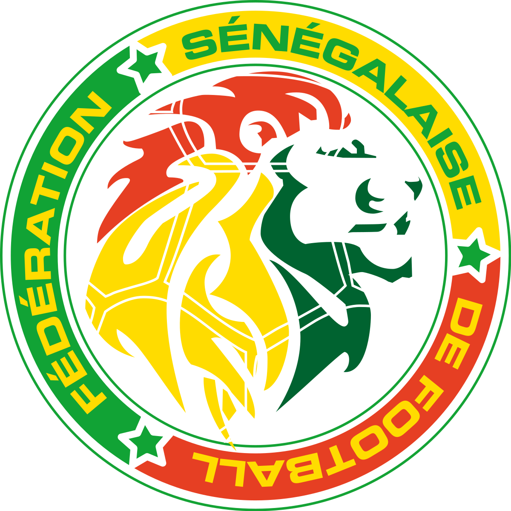
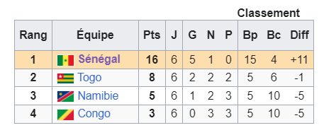
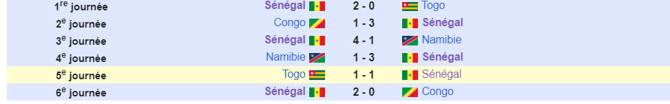
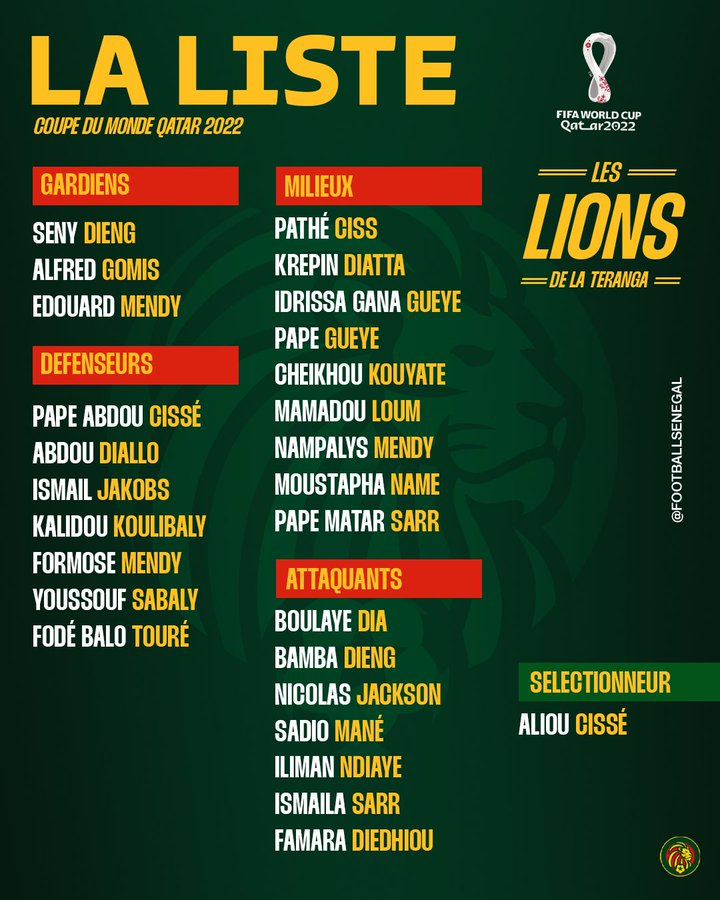

Équipe du Senegal de football


Description
L'équipe du Sénégal de football, créée en 1961, est constituée par une sélection des meilleurs joueurs sénégalais, sous l'égide de la Fédération sénégalaise de football.
L'équipe du Sénégal est entraînée depuis mars 2015 par son ancien capitaine Aliou Cissé.
Le parcours de la selection senegalais lors des eliminatoires de la coupe du monde
Le Sénégal est exempté du premier tour de qualification. Au deuxième tour, il est placé dans le groupe H, en compagnie du Congo, de la Namibie et du Togo. Les Lions terminent facilement en tête du groupe, avec cinq victoires et un match nul en six rencontres.

Les matches disputés en phase de groupe des qualifications

Au troisième tour, le Sénégal est confronté à l'Égypte qu'il a battue un mois et demi plus tôt en finale de la CAN.
Les Pharaons remportent le match aller, sur un but contre son camp de Saliou Ciss en début de match.
Au retour, le Sénégal reçoit dans le nouveau stade Abdoulaye-Wade qui accueille son premier match officiel. Boulaye Dia ouvre rapidement le score. Le Sénégal s'impose finalement aux tirs au but (3-1).
La liste convoquée du Senegal
